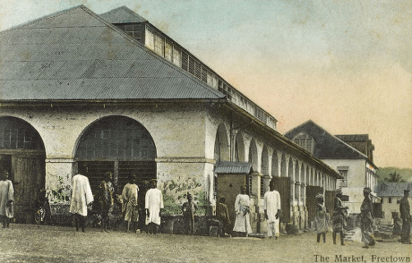

Founded in 1952, Freetown began as a small agricultural community along the river. The town was officially incorporated in 1965 and has grown steadily ever since. The Chamber of Commerce was established in 1978 to support local businesses and promote economic growth.

In the 1980s, the town saw significant growth with the opening of the manufacturing plant that still employs over 1,000 residents today. The 1990s brought new schools and community centers, and the 2000s saw the revitalization of our historic downtown district.